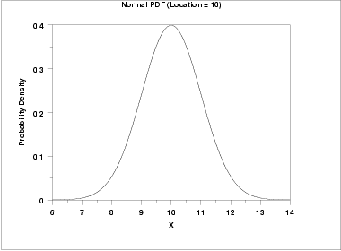
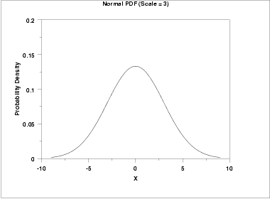
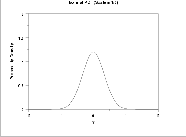
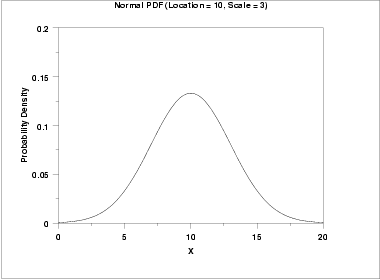

1.3. EDA Techniques
1.3.6. Probability Distributions
1.3.6.4. |
Location and Scale Parameters |
For example, the following graph is the probability density function for the standard normal distribution, which has the location parameter equal to zero and scale parameter equal to one.


The effect of the location parameter is to translate the graph, relative to the standard normal distribution, 10 units to the right on the horizontal axis. A location parameter of -10 would have shifted the graph 10 units to the left on the horizontal axis.
That is, a location parameter simply shifts the graph left or right on the horizontal axis.

In contrast, the next graph has a scale parameter of 1/3 (=0.333). The effect of this scale parameter is to squeeze the pdf. That is, the maximum y value is approximately 1.2 as opposed to 0.4 and the y value is near zero at (+/-) 1 as opposed to (+/-) 3.

The effect of a scale parameter greater than one is to stretch the pdf. The greater the magnitude, the greater the stretching. The effect of a scale parameter less than one is to compress the pdf. The compressing approaches a spike as the scale parameter goes to zero. A scale parameter of 1 leaves the pdf unchanged (if the scale parameter is 1 to begin with) and non-positive scale parameters are not allowed.

It is common in statistical software packages to only compute the standard form of the distribution. There are formulas for converting from the standard form to the form with other location and scale parameters. These formulas are independent of the particular probability distribution.
| Cumulative Distribution Function |
F(x;a,b) =
F((x-a)/b;0,1)
|
| Probability Density Function |
f(x;a,b) =
(1/b)f((x-a)/b;0,1)
|
| Percent Point Function |
G(α;a,b) =
a + bG(α;0,1)
|
| Hazard Function |
h(x;a,b) =
(1/b)h((x-a)/b;0,1)
|
| Cumulative Hazard Function |
H(x;a,b) =
H((x-a)/b;0,1)
|
| Survival Function |
S(x;a,b) =
S((x-a)/b;0,1)
|
| Inverse Survival Function |
Z(α;a,b) = a +
bZ(α;0,1)
|
| Random Numbers | Y(a,b) = a + bY(0,1) |